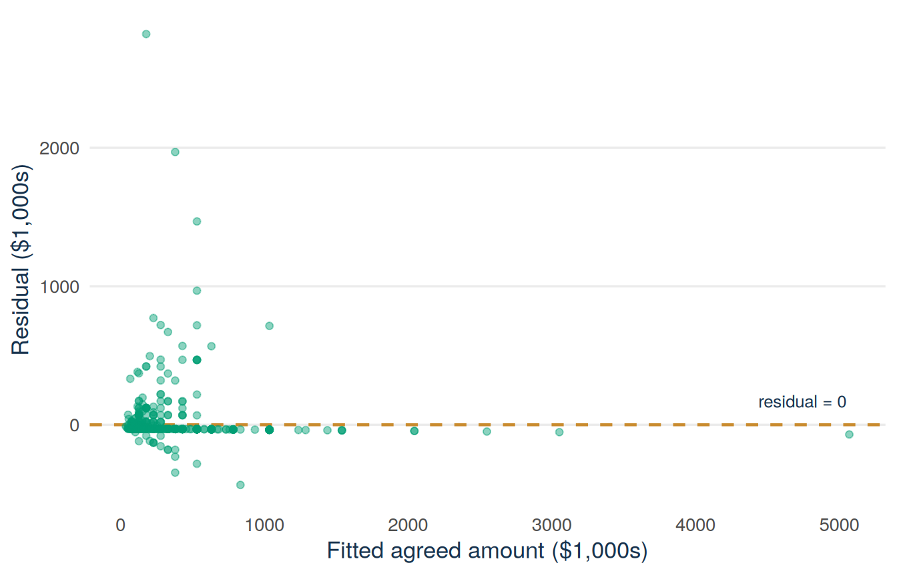
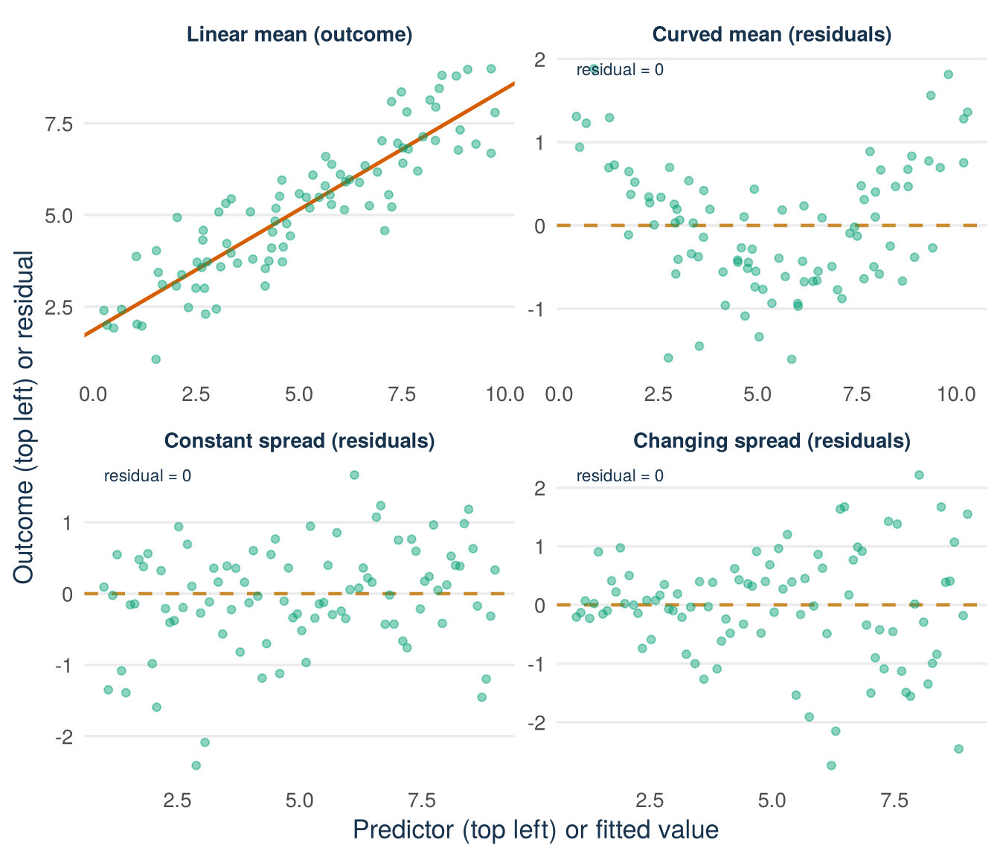
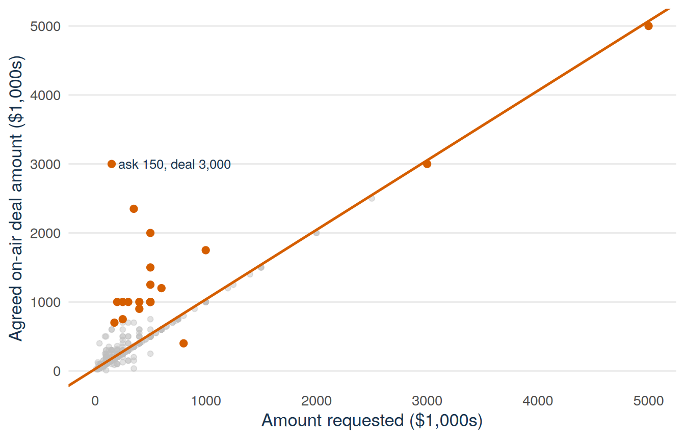
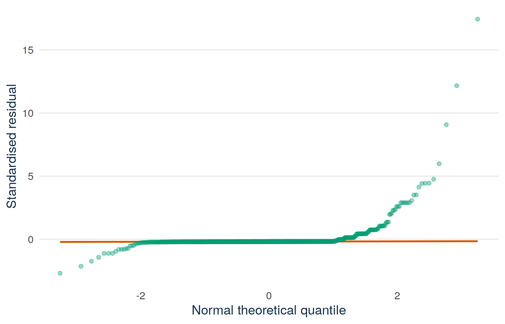
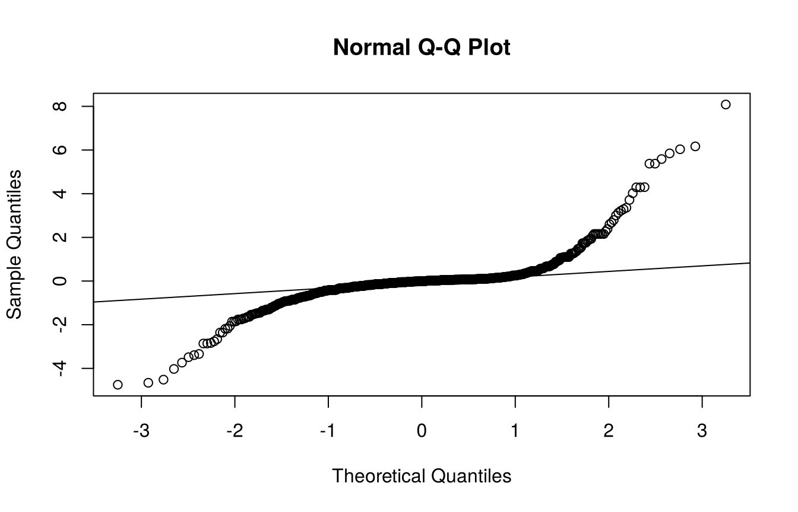
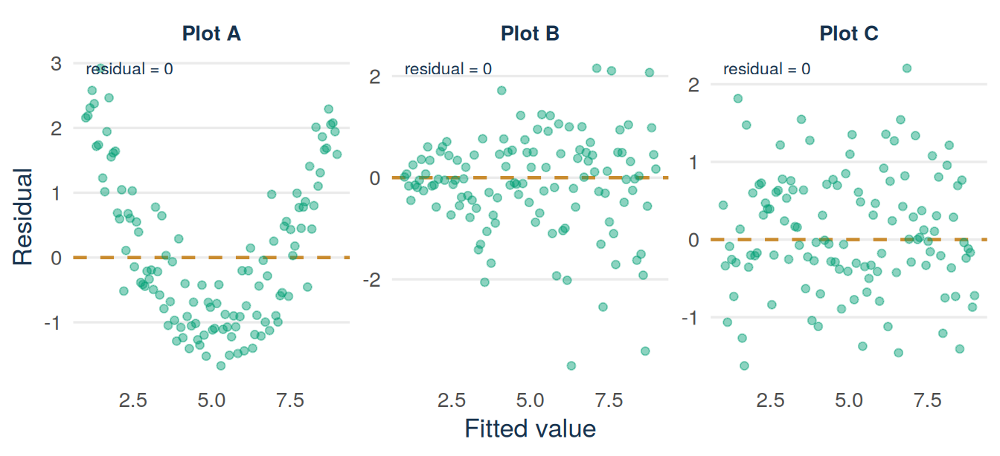
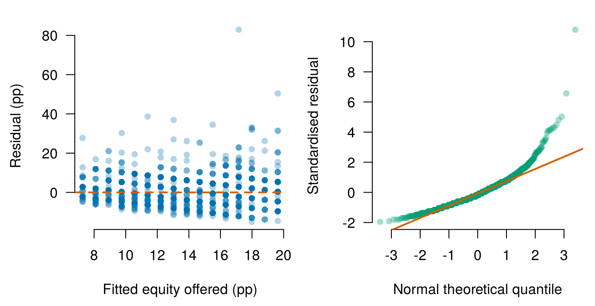

sharks <- read.csv("data/shark_tank_teaching.csv", stringsAsFactors = FALSE)
vals <- subset(sharks, deal_on_show == 1 & deal_equity_pct > 0)
vals$claimed_m <- vals$requested_valuation_usd / 1e6
vals$agreed_m <- vals$deal_valuation_usd / 1e6
val_model <- lm(agreed_m ~ claimed_m, data = vals)
plot(fitted(val_model), residuals(val_model))
abline(h = 0, lty = 2)Lecture 2: What the model assumes and how residuals reveal it
By the end of Lecture 2, you can
- state the assumptions behind a least-squares regression and its standard errors, and say what each one supports
- explain why the outcome itself does not need to be normally distributed
- inspect residual plots for non-linearity and unequal variance
- explain which assumptions no plot can show, and what knowledge about the data is needed to judge them
- compute standardised residuals and Cook’s distance, and identify influential observations
- read a normal Q–Q plot and say when normality matters
- respond to an influential observation properly: investigate, report, never silently delete.
Must know
Be able to do yourself:
- make and read a residual-versus-fitted plot and a Q–Q plot
- say which assumption a visible pattern challenges
- find large standardised residuals and influential observations
- apply the rule: investigate, report, never silently delete
- name the conditions that no plot can show.
Enough to recognise:
- the wording of the assumptions table
- the notation \(E[\,\cdot\mid X]\).
Driving question
R draws a fitted line in the same way through good data and through bad data. Whether you can trust the line depends on assumptions that no software checks for you.
The fitted line from Lecture 1 looks convincing. Under what conditions should we trust it, and what do its residuals reveal?
Before class
Total preparation time: about 15 minutes.
Minimum path: the R task and the prediction. Full path: everything in this section.
No video this week
The preparation for this lecture is your own residual plot. Do the R warm-up below and bring the plot to class.
Predict (5 minutes). Answer the one-click Wooclap question posted on Canvas before you come to class: the agreed valuations are strongly right-skewed (most are small and a few are very large), far from a normal distribution. Does that alone make the Lecture 1 regression invalid, yes or no? Choose one answer before class and write one sentence explaining why. The lecture material gives the correct answer.
R warm-up (10 minutes). Rebuild the Lecture 1 model and make its residual-versus-fitted plot: the fitted values on the horizontal axis and the residuals on the vertical axis. Bring the plot to class:
Code along (bring your laptop). Bring a charged laptop with RStudio and the course project open, so that you can run the code of this chapter yourself during the lecture and get the same numbers and figures.
Lecture material
This section states what the regression model assumes. It then shows how to check these assumptions with the residuals of the Lecture 1 model. It also shows which assumptions no plot can check.
Start with a founder’s question
Lecture 1 gave you a number: the sharks accept about 65 cents of every claimed dollar. Before you plan a negotiation around this number, ask whether you can trust the line behind it. R draws a line through any data, even through data that do not support a line. R never warns you.
The residual plot from the warm-up
The code below is the warm-up code. It rebuilds the data and the model of Lecture 1: the valuation agreed on air (agreed_m) regressed on the valuation claimed by the founder (claimed_m), both in $ millions, for the 874 Shark Tank deals for a share of the company.
sharks <- read.csv("data/shark_tank_teaching.csv", stringsAsFactors = FALSE)
vals <- subset(sharks, deal_on_show == 1 & deal_equity_pct > 0)
vals$claimed_m <- vals$requested_valuation_usd / 1e6
vals$agreed_m <- vals$deal_valuation_usd / 1e6
val_model <- lm(agreed_m ~ claimed_m, data = vals)See the R code for this figure
library(ggplot2)
sharks <- read.csv("data/shark_tank_teaching.csv", stringsAsFactors = FALSE)
vals <- subset(sharks, deal_on_show == 1 & deal_equity_pct > 0)
vals$claimed_m <- vals$requested_valuation_usd / 1e6
vals$agreed_m <- vals$deal_valuation_usd / 1e6
val_model <- lm(agreed_m ~ claimed_m, data = vals)
resid_df <- data.frame(
fitted = fitted(val_model),
residual = residuals(val_model)
)
ggplot(resid_df, aes(x = fitted, y = residual)) +
geom_hline(yintercept = 0, colour = "#C98B2E",
linetype = "dashed", linewidth = 0.8) +
geom_point(alpha = 0.45, size = 1.6, colour = "#009E73") +
annotate("text", x = 31.5, y = 0.9, label = "residual = 0",
hjust = 1, colour = "#17324D", size = 3.4) +
labs(x = "Fitted agreed valuation ($ millions)",
y = "Residual ($ millions)") +
theme_minimal(base_size = 13) +
theme(
panel.grid.minor = element_blank(),
panel.grid.major.x = element_blank(),
plot.caption = element_text(colour = "#5B6976"),
axis.title = element_text(colour = "#17324D")
)
Definition
Residual plot (residual-versus-fitted plot). A scatterplot with the fitted values \(\widehat Y_i\) on the horizontal axis and the residuals \(e_i\) on the vertical axis. It shows how the misses of the line (the residuals) change from the left to the right of the plot.
In Figure 18.1, both axes are in the units of the outcome, $1 million. A point above zero is a deal that closed at a higher valuation than its fitted value. A point below zero is a deal that closed at a lower valuation than its fitted value. To read patterns in this plot, you first need to know what the model assumes.
What each assumption supports
The model of Lecture 1 is
\[ Y_i=\beta_0+\beta_1X_i+\varepsilon_i. \]
The model depends on several separate assumptions. Each assumption supports a different part of the analysis.
Definition
Model assumptions. The conditions under which we can trust the fitted line and its standard errors:
- Linearity. The average of \(Y\) at each value of \(X\) lies on a straight line.
- Independence. The observations do not depend on each other. Every row brings new information.
- Constant variance. The errors spread equally at every value of \(X\).
- Normal errors. At each value of \(X\), the errors follow a normal distribution. This assumption matters only in small samples.
The table repeats these four assumptions in symbols and adds two more conditions. Without variation in \(X\), we cannot calculate a slope. And to read the slope as an effect, we need one more condition: no confounding. A confounder is a variable that is not in the model and that affects both \(X\) and \(Y\).
| Condition | Meaning | What it supports |
|---|---|---|
| Linear conditional mean | \(E[Y\mid X=x]=\beta_0+\beta_1x\) over the range of the data | One constant slope summarises how the average of \(Y\) changes with \(X\) |
| No confounding (for a causal reading only) | Nothing that is missing from the data affects both \(X\) and \(Y\) | Reading the slope as the effect of changing \(X\). Describing how average outcomes differ across values of \(X\) does not need it |
| Independent observations | The errors of different rows are unrelated, so no row repeats the information of another | The usual standard-error formula |
| Variation in \(X\) | Not all observations have the same predictor value | A slope can be calculated |
| Constant conditional variance | \(\operatorname{Var}(\varepsilon\mid X)=\sigma^2\), the same at every value of \(X\) | The usual standard-error formula |
| Conditional normality | At each value of \(X\), \(\varepsilon\) follows a normal distribution | Exact t and F distributions in small samples |
No row of the table says that the data are normal. This answers the Wooclap question from Before class: the outcome does not need to be normally distributed, and neither does the predictor. The agreed valuations are strongly right-skewed, and this skew alone does not break any assumption. The assumptions are about the average of \(Y\) at each \(X\), about the errors, and about how the data were produced. They are not about the histogram of \(Y\) or the histogram of \(X\).
Linearity is about the average, not every point
Individual outcomes do not have to lie on a line. Linearity says that the average outcome at each predictor value follows a line. If the residual plot shows a curve, one constant slope misses part of that average pattern.
Constant variance is about the vertical spread. It says that the variance of the errors is the same at each predictor value. It does not say that all residuals have the same size. The technical name for constant variance is homoskedasticity, and for changing variance heteroskedasticity. In a residual plot, changing variance looks like a fan: the vertical band of points widens or narrows from left to right. Figure 18.2 shows both problems.
See the R code for this figure
library(ggplot2)
set.seed(802)
n_demo <- 90
x_demo <- runif(n_demo, 0, 10)
y_linear <- 2 + 0.65 * x_demo + rnorm(n_demo, 0, 0.8)
y_curved <- 2 + 0.10 * x_demo + 0.09 * x_demo^2 + rnorm(n_demo, 0, 0.55)
m_curved <- lm(y_curved ~ x_demo)
m_linear <- lm(y_linear ~ x_demo)
fit_demo <- seq(1, 9, length.out = n_demo)
res_constant <- rnorm(n_demo, 0, 0.75)
res_fan <- rnorm(n_demo, 0, 0.18 + 0.13 * fit_demo)
panel_names <- c("Linear mean (outcome)", "Curved mean (residuals)",
"Constant spread (residuals)", "Changing spread (residuals)")
demo_df <- data.frame(
panel = factor(rep(panel_names, each = n_demo), levels = panel_names),
x = c(x_demo, fitted(m_curved), fit_demo, fit_demo),
y = c(y_linear, residuals(m_curved), res_constant, res_fan)
)
line_df <- data.frame(
panel = factor(panel_names[1], levels = panel_names),
intercept = coef(m_linear)[1],
slope = coef(m_linear)[2]
)
zero_df <- data.frame(
panel = factor(panel_names[-1], levels = panel_names),
yintercept = 0
)
zero_lab <- data.frame(
panel = factor(panel_names[-1], levels = panel_names),
x = c(min(fitted(m_curved)), 1, 1),
y = c(max(residuals(m_curved)), max(res_constant), max(res_fan))
)
ggplot(demo_df, aes(x = x, y = y)) +
geom_hline(data = zero_df, aes(yintercept = yintercept),
colour = "#C98B2E", linetype = "dashed", linewidth = 0.8) +
geom_abline(data = line_df, aes(intercept = intercept, slope = slope),
colour = "#D55E00", linewidth = 0.9) +
geom_point(alpha = 0.45, size = 1.6, colour = "#009E73") +
geom_text(data = zero_lab, aes(x = x, y = y, label = "residual = 0"),
hjust = 0, colour = "#17324D", size = 3) +
facet_wrap(~ panel, scales = "free") +
labs(x = "Predictor (top left) or fitted value",
y = "Outcome (top left) or residual") +
theme_minimal(base_size = 13) +
theme(
panel.grid.minor = element_blank(),
panel.grid.major.x = element_blank(),
plot.caption = element_text(colour = "#5B6976"),
axis.title = element_text(colour = "#17324D"),
strip.text = element_text(colour = "#17324D", face = "bold")
)
Check: match each residual pattern to the assumption it challenges
A U-shaped (curved) residual pattern challenges the linear conditional mean: the average residual is not zero everywhere, so a straight line misses part of the mean relationship. A fan challenges constant conditional variance: the vertical spread of residuals changes with the fitted value. A real plot can show both problems at once.
Reading the valuation model’s vertical spread
Now look for a fan in Figure 18.1. At small fitted values the residuals stay close to the zero line. At larger fitted values they spread over several million dollars. A short calculation confirms what the plot shows. The code sorts the deals by the claimed valuation into five groups. Each group has about a fifth of the deals. The code then gives the standard deviation of the residuals in each group:
fifth <- cut(vals$claimed_m,
breaks = quantile(vals$claimed_m, probs = seq(0, 1, 0.2)),
include.lowest = TRUE)
round(tapply(residuals(val_model), fifth, sd), 2)[0.04,0.625] (0.625,1.33] (1.33,2.5] (2.5,5] (5,50]
0.14 0.36 1.19 1.08 3.61 The standard deviation of the residuals is about $0.14 million in the fifth of deals with the smallest claimed valuations and about $3.6 million in the fifth with the largest, about 25 times as much. The spread of agreed valuations grows with the size of the claim. This makes economic sense: founders and sharks can disagree by much more money about a $20 million company than about a $200,000 company. This pattern is a fan. The usual standard errors assume one common variance \(\sigma^2\), so here they depend on an assumption that probably does not hold. Lecture 3 returns to this point.
Try it: annotate a residual plot
Try this with your neighbour first. Use a printed copy or a sketch of Figure 18.1.
Step 1 (given). The horizontal dashed line marks residual zero. Points above it are deals with an agreed valuation above the fitted value. Points below it are deals with an agreed valuation below the fitted value.
Step 2 (you). Draw two rough curves around the residuals, one along the top of the points and one along the bottom, from the left edge to the right edge of the plot. Does the band between the two curves stay equally wide?
Step 3 (you). Name the assumption that your two curves challenge. Then write one sentence that says whether the average of the residuals also moves away from zero in some part of the plot.
Check your answer
The band between the two curves widens strongly from left to right. Deals with small fitted valuations lie within a few hundred thousand dollars of the line. Deals with large fitted valuations lie within several million. That fan challenges constant conditional variance. The average residual stays near zero across the range, so the plot does not show a clear violation of the linear conditional mean. You read the same plot twice, once for each assumption.
What plots cannot show
Two rows of the assumptions table never appear in any residual plot.
No confounding. A curve in the residual plot can show that a straight line misses the average pattern. No plot can show whether a confounder exists, that is, whether something that is missing from the data affects both the predictor and the outcome. Least squares always gives residuals with a mean of zero and no straight-line relation to \(X\). So the residual plot looks clean even when a confounder exists. Ask how the observations were produced. Which common causes of \(X\) and \(Y\) are plausible but missing from the data?
Independence. Whether rows share information is a fact about how the data were collected, not about the residuals. Suppose that rows are related but you treat them as independent. Then the data seem to contain more information than they really do, and the standard errors are too small.
Two examples from Shark Tank:
- Shared episodes. Pitches in the same episode face the same panel of sharks on the same day, and the same few sharks appear in hundreds of deals. Their rows share negotiators, moods, and editing decisions. This is an independence problem: the 874 deals contain somewhat less information than 874 unrelated deals would.
- Network ties. Suppose founders with strong investor networks both claim higher valuations (they know the market) and get better deals (the sharks know them). Network strength is not recorded in the data. It is related to the predictor, and it affects the outcome. This is a confounding problem. The slope still describes how average agreed valuations differ across claims. But you cannot read the slope as what a higher claim would achieve.
Neither problem is visible in Figure 18.1. You can find both problems only if you know how the show works.
Influence: when a few rows move the line a lot
A first check needs no plot. The function summary() gives the smallest residual, the largest residual, the mean, the median, and the two quartiles. Basic Lecture 1 defines the median and the quartiles: a quarter of the values lie below the first quartile, half below the median, and three quarters below the third quartile.
summary(residuals(val_model)) Min. 1st Qu. Median Mean 3rd Qu. Max.
-7.817198 -0.396788 -0.006381 0.000000 0.173447 13.446138 Example 18.1 (Worked example: reading the summary of the residuals) Read the numbers one by one, all in $ millions:
- The median residual is about \(-0.01\): the typical deal lies almost exactly on the fitted line.
- The middle half of all residuals, from the first to the third quartile, runs from \(-0.40\) to \(0.17\): a band about $570,000 wide.
- The minimum is about \(-7.8\) and the maximum about \(13.4\): one deal closed $7.8 million below its fitted valuation and another $13.4 million above.
The mean is zero, as it always is when the model has an intercept. If no deal were extreme, the largest misses would be a few times the width of the middle half. Here they are 14 to 24 times as large. A few deals miss the line by far more than the typical deal does, and such deals can strongly change the fitted line. The same numbers, without the mean, appear at the top of summary(val_model). Lecture 3 explains this output.
Two standard tools make this check precise. A standardised residual, rstandard(), is a residual divided by its standard deviation, so it counts the miss in standard deviations. Values beyond about \(\pm 3\) are large by any common standard. Cook’s distance, cooks.distance(), measures how much the whole fitted line would move if one observation were removed. A common threshold is \(4/n\): you look more closely at observations above it.
Definition
Outlier. An observation with an unusually large residual: its outcome lies far from the fitted line. A common rule is a standardised residual beyond \(\pm 3\).
Influential observation. An observation that changes the fitted line noticeably when it is removed. A common rule is a Cook’s distance above \(4/n\).
rs <- rstandard(val_model)
cd <- cooks.distance(val_model)
sum(abs(rs) > 3) # standardised residuals beyond 3[1] 25sum(cd > 4 / nobs(val_model)) # Cook's distance above 4/n[1] 64vals[order(cd, decreasing = TRUE)[1:3],
c("claimed_m", "agreed_m")] claimed_m agreed_m
1075 50 25
1003 45 36
535 28 28The command nobs(val_model) gives the number of observations \(n\) that the model uses, here 874. Twenty-five deals have standardised residuals beyond \(\pm 3\), and 64 have a Cook’s distance above \(4/n\). These are 3% and 7% of the 874 deals. The most influential deal claimed a valuation of $50 million and closed at $25 million, half of the claim. Figure 18.3 marks the 64 deals in the scatterplot.
See the R code for this figure
library(ggplot2)
sharks <- read.csv("data/shark_tank_teaching.csv", stringsAsFactors = FALSE)
vals <- subset(sharks, deal_on_show == 1 & deal_equity_pct > 0)
vals$claimed_m <- vals$requested_valuation_usd / 1e6
vals$agreed_m <- vals$deal_valuation_usd / 1e6
val_model <- lm(agreed_m ~ claimed_m, data = vals)
cd <- cooks.distance(val_model)
vals$flagged <- cd > 4 / nrow(vals)
top <- which.max(cd)
ggplot(vals, aes(x = claimed_m, y = agreed_m)) +
geom_point(data = subset(vals, !flagged),
colour = "grey75", alpha = 0.45, size = 1.6) +
geom_abline(intercept = coef(val_model)[1],
slope = coef(val_model)[2],
colour = "#D55E00", linewidth = 0.9) +
geom_point(data = subset(vals, flagged),
colour = "#D55E00", size = 2.2) +
annotate("text", x = vals$claimed_m[top] - 1.2, y = vals$agreed_m[top],
label = "claimed 50, agreed 25",
hjust = 1, colour = "#17324D", size = 3.4) +
labs(x = "Valuation claimed by the founder ($ millions)",
y = "Valuation agreed on air ($ millions)") +
theme_minimal(base_size = 13) +
theme(
panel.grid.minor = element_blank(),
panel.grid.major.x = element_blank(),
plot.caption = element_text(colour = "#5B6976"),
axis.title = element_text(colour = "#17324D")
)
What should you do with a flagged observation? Follow three steps, in this order:
- Investigate. Is it a data error, or a real pitch? Here the valuations of the flagged deals match their recorded amounts and shares, so we treat these deals as real.
- Report. State that the results depend on a few observations and say which ones. Show the fit with and without them if the results change.
- Never silently delete. If you drop rows that do not fit your story and do not say so, you give a false picture of the data.
Q–Q plots: how to read them, when normality matters
The last assumption in the table is conditional normality of the errors. A normal Q–Q plot (quantile-quantile plot) puts the standardised residuals in order and compares them with the values that a normal distribution would give. If the residuals are close to normal, the points lie along the reference line.
See the R code for this figure
library(ggplot2)
sharks <- read.csv("data/shark_tank_teaching.csv", stringsAsFactors = FALSE)
vals <- subset(sharks, deal_on_show == 1 & deal_equity_pct > 0)
vals$claimed_m <- vals$requested_valuation_usd / 1e6
vals$agreed_m <- vals$deal_valuation_usd / 1e6
val_model <- lm(agreed_m ~ claimed_m, data = vals)
qq_df <- data.frame(rs = rstandard(val_model))
ggplot(qq_df, aes(sample = rs)) +
geom_qq_line(colour = "#D55E00", linewidth = 0.9) +
geom_qq(colour = "#009E73", alpha = 0.4, size = 1.6) +
labs(x = "Normal theoretical quantile",
y = "Standardised residual") +
theme_minimal(base_size = 13) +
theme(
panel.grid.minor = element_blank(),
panel.grid.major.x = element_blank(),
plot.caption = element_text(colour = "#5B6976"),
axis.title = element_text(colour = "#17324D")
)
The horizontal axis shows where a residual of this rank would lie if the errors were normal. The vertical axis shows where the residual actually lies. In Figure 18.4 the middle of the distribution is close to the line. Both ends bend away from it, the upper end more strongly. The residuals have more extreme values on both sides than a normal distribution has. We say that such a distribution has heavy tails.
Two base R commands draw the same plot without the styling of the figure:
qqnorm(rstandard(val_model))
qqline(rstandard(val_model))
When does this matter? Normal errors are needed for exact t and F distributions in small samples. With 874 observations the tests and intervals of Lecture 3 still hold approximately without normal errors, because averages over many observations are close to normal. The approximation is weaker when a few extreme deals decide where the line lies. Very extreme outliers distort both the line and its standard errors, in samples of any size.
What a residual check can and cannot show
- A residual plot without patterns agrees with the assumptions. It does not prove them. Confounders and dependent rows do not show up in a plot.
- A fan or an influential deal is a finding to look into and to report. It is not a final judgement on the model.
- Keeping or dropping an unusual observation is a decision that you make from knowledge of the data and that you state openly.
What you can do with it: before you trust a fitted line, look at its residual plot and at the few points that move it most. If the conclusion changes without them, say so.
Answering the driving question
You can trust the Lecture 1 line only under certain conditions. Its residuals reveal two problems. The vertical spread grows with the size of the claim (the fan). And a few extreme deals, flagged by standardised residuals beyond \(\pm3\) and Cook’s distances above \(4/n\), strongly affect both the line and its standard errors. Nothing in the plots contradicts a linear conditional mean. Independence and the absence of confounding cannot be seen in any plot. They depend on how the show works. Lecture 3 calculates standard errors, intervals, and tests for this model. These two problems limit how much you can trust those results.
A founder’s decision (invented example)
One week in your data includes a catering order of 200 meal boxes, in a week with high advertising. With that week the advertising slope is 0.15. Without that week the slope is 0.09. The decision: do not base next term’s budget on a fit that depends on one single week. Catering is a different business from selling single meal boxes every day. You report both fits, plan the daily business with the slope of 0.09, and look at catering separately.
Next: The slope is an estimate from one set of deals. Lecture 3 shows how precise it is, with its standard error, its confidence interval, and a t-test. It also shows how much of the variation in the outcome the line explains (\(R^2\)) and how to test whether the model is useful at all (the F-test).
After class
Total practice time: about 75 minutes.
Minimum path (about 35 minutes): read the lecture material, answer the recall questions, then work for 10 minutes on the tasks that follow. Full path: all tasks below.
Read the lecture material (15 minutes)
Read the Lecture material section above from start to end. The lecture covered the main points. The text has every step, every example, and all the code, including parts that were not shown in class. Note what is still unclear and bring it to the next tutorial, or ask Tilly.
Recall questions (10 minutes)
- Which assumption concerns the conditional mean?
- Must the outcome variable be normally distributed? Why or why not?
- What does a fan shape in a residual-versus-fitted plot suggest?
- Which assumptions can you not check with a residual plot alone?
- What do a standardised residual and Cook’s distance each measure?
- What are the three steps for handling a flagged observation?
Check your answers
- The linear conditional mean, \(E[Y\mid X=x]=\beta_0+\beta_1x\).
- No. The assumptions are about the errors at each value of the predictor and about how the data were produced. They are not about the distribution of \(Y\) or of \(X\) on its own.
- Non-constant conditional variance (heteroskedasticity).
- Independence and the absence of confounding. They require knowledge of how the data were collected.
- A standardised residual measures how unusual one observation’s vertical miss is, in standard-deviation units. Cook’s distance measures how much the whole fitted line moves if that observation is removed.
- Investigate, report, never silently delete.
Finish a half-worked example: diagnose three residual plots (15 minutes)
For each panel of Figure 18.5, write one sentence: which assumption, if any, does the plot challenge?
Plot A (given). The residuals follow a U shape. The average residual is negative in the middle and positive at the ends, so the plot challenges the linear conditional mean.
Plot B and Plot C (you). Write the sentence for each of them in the same way.
See the R code for this figure
library(ggplot2)
set.seed(1204)
n_p <- 120
f_p <- seq(1, 9, length.out = n_p)
res_a <- 1.6 * (f_p - 5)^2 / 8 - 1 + rnorm(n_p, 0, 0.55)
res_b <- rnorm(n_p, 0, 0.15 + 0.16 * f_p)
res_c <- rnorm(n_p, 0, 0.8)
plots_df <- data.frame(
panel = rep(c("Plot A", "Plot B", "Plot C"), each = n_p),
fitted = rep(f_p, 3),
residual = c(res_a, res_b, res_c)
)
zero_lab <- data.frame(
panel = c("Plot A", "Plot B", "Plot C"),
x = 1,
y = c(max(res_a), max(res_b), max(res_c))
)
ggplot(plots_df, aes(x = fitted, y = residual)) +
geom_hline(yintercept = 0, colour = "#C98B2E",
linetype = "dashed", linewidth = 0.8) +
geom_point(alpha = 0.45, size = 1.6, colour = "#009E73") +
geom_text(data = zero_lab, aes(x = x, y = y, label = "residual = 0"),
hjust = 0, colour = "#17324D", size = 3) +
facet_wrap(~ panel, scales = "free_y") +
labs(x = "Fitted value", y = "Residual") +
theme_minimal(base_size = 13) +
theme(
panel.grid.minor = element_blank(),
panel.grid.major.x = element_blank(),
plot.caption = element_text(colour = "#5B6976"),
axis.title = element_text(colour = "#17324D"),
strip.text = element_text(colour = "#17324D", face = "bold")
)
Check your answers
Plot B: the vertical band widens with the fitted value. This fan challenges constant conditional variance. Plot C: no visible pattern. The plot agrees with linearity and constant variance, the two assumptions it can show. This result is not proof that all assumptions hold.
Practice: diagnostics for your own model (15 minutes)
Fit equity_offered_pct ~ season on all 1,441 pitches. Produce the residual-versus-fitted plot and the normal Q–Q plot, and interpret each in one or two sentences. Then count the standardised residuals beyond \(\pm 3\) and the observations with a Cook’s distance above \(4/n\).
Check your answers
sharks <- read.csv("data/shark_tank_teaching.csv", stringsAsFactors = FALSE)
equity_model <- lm(equity_offered_pct ~ season, data = sharks)
old_par <- par(no.readonly = TRUE)
par(mfrow = c(1, 2), mar = c(4.5, 4.4, 1.3, 0.7), las = 1)
plot(fitted(equity_model), residuals(equity_model),
pch = 16, col = grDevices::adjustcolor("#0072B2", alpha.f = 0.30),
bty = "n", xlab = "Fitted equity offered (pp)",
ylab = "Residual (pp)")
abline(h = 0, lty = 2, lwd = 2, col = "#D55E00")
qqnorm(rstandard(equity_model), pch = 16,
col = grDevices::adjustcolor("#009E73", alpha.f = 0.35),
bty = "n", main = "", xlab = "Normal theoretical quantile",
ylab = "Standardised residual")
qqline(rstandard(equity_model), col = "#D55E00", lwd = 2)
par(old_par)
max(residuals(equity_model))[1] 82.83991c(big_rstandard = sum(abs(rstandard(equity_model)) > 3),
cooks_flagged = sum(cooks.distance(equity_model) > 4 / nobs(equity_model)))big_rstandard cooks_flagged
18 58 The residual plot shows sixteen vertical stripes. The season (season) takes only whole-number values, so only sixteen fitted values exist. That is a feature of the predictor, not a violation. The vertical spread is broadly similar across the stripes, so there is no strong fan. The Q–Q plot bends upwards at the right end: some pitches offered far more equity than the fitted trend. The largest residual is about 83 percentage points, from founders who offered almost the whole company. So the normality assumption probably does not hold. With \(n = 1441\) this matters little for tests and intervals, but you should look more closely at the extreme rows. Eighteen standardised residuals lie beyond \(\pm 3\), and 58 pitches have a Cook’s distance above \(4/n\). These are about 1% and 4% of the 1,441 pitches.
Review: one residual-arithmetic question from Lecture 1 (5 minutes)
Using the Lecture 1 fitted equation \(\widehat{\text{agreed}} = -0.068 + 0.649 \times \text{claimed}\) (both in $ millions): a founder claimed a valuation of $3 million and the deal closed at $1.5 million. Compute the fitted value and the residual.
Check your answer
Fitted: \(-0.068 + 0.649\times3 = 1.88\), about $1.88 million. Residual: \(1.5 - 1.88 = -0.38\), about \(-\$380{,}000\): the deal closed below the model’s fitted conditional mean.
Worked exam interpretation (5 minutes)
Exam-style question. An invented example. A regression describes the monthly revenue of cafés by their opening hours per week. Its residual-versus-fitted plot shows vertical spread increasing with the fitted value. Name the pattern and the assumption it challenges, and state one assumption the plot cannot assess and what information would assess it.
Check a model answer
The pattern is a fan: the spread of the residuals grows with the fitted value. This pattern challenges constant conditional variance (homoskedasticity). The plot cannot assess independence of observations. To assess it, you need knowledge of the data collection, for example whether some cafés appear in several rows or belong to the same chain.
Check the AI (5 minutes)
You asked an AI assistant: “My residuals look strange. What should I do?” It answered:
“The agreed valuations are not normally distributed, so the regression is invalid. I removed the 25 outliers and now the model is fine.”
Find what is wrong and write the corrected answer. This task is the Verify step of Attempt → Ask → Verify → Explain, and the exam asks for this step.
Check your answer
Two errors. The outcome does not have to be normally distributed. The assumptions are about the errors and about how the data were produced. And you never remove unusual deals without saying so. Investigate them, report the fit with and without them, and say which one you use and why.
Make it yours (5 minutes)
Two sentences about your own venture
Think of your EiA3 venture, or any business you know well. Think of a regression you might one day run on its data (sales on advertising, orders on price, sign-ups on campaign week). Write two sentences. First, name the assumption from today’s table that you would worry about most for these data. Second, describe one observation that could dominate the fit, and say what you would do about it. Investigate and report, do not delete.
See an example, then write your own
Take a student venture that sells boxes of prepared meals on campus. “For orders-on-price data I would worry most about confounding. I cut prices exactly in the weeks when demand is already weak. So weak demand affects both my price and my orders. One catering order of 200 meal boxes would dominate any fit. I would report the model with and without it and investigate whether catering is a different business, not delete the row.”
You can discuss this task, and any other task in this chapter, with Tilly, the course AI assistant: describe your venture’s data and ask it to argue which assumption is least plausible.
Continue to Lecture 3: Coefficient inference, fit, and the F-test.
Code sheet: Lecture 2 commands and formulas.
For a more formal treatment, see James et al., An Introduction to Statistical Learning, 2nd ed., Sections 3.1.2 and 3.3.3, and Nieuwenhuis, Statistical Methods for Business and Economics, Chapters 19 and 22.